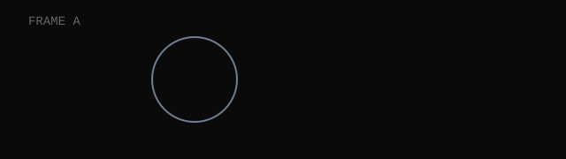
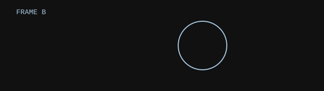

// SYSTEM // LDS-1138
THX 1138
A clinical control surface. Behavior comes from UI SDK. The phosphor and the concrete are the theme.
Designation
Choices
Scope
Navigation
Overlays
Anyone with the link can view.
Layout
Index
page, layout, theme
Record
The page is the record.
Slide 01
Slide 02
Slide 03


Readouts
Scan complete. Corridor is empty.
Measuring
Watch this node.
The hidden name is